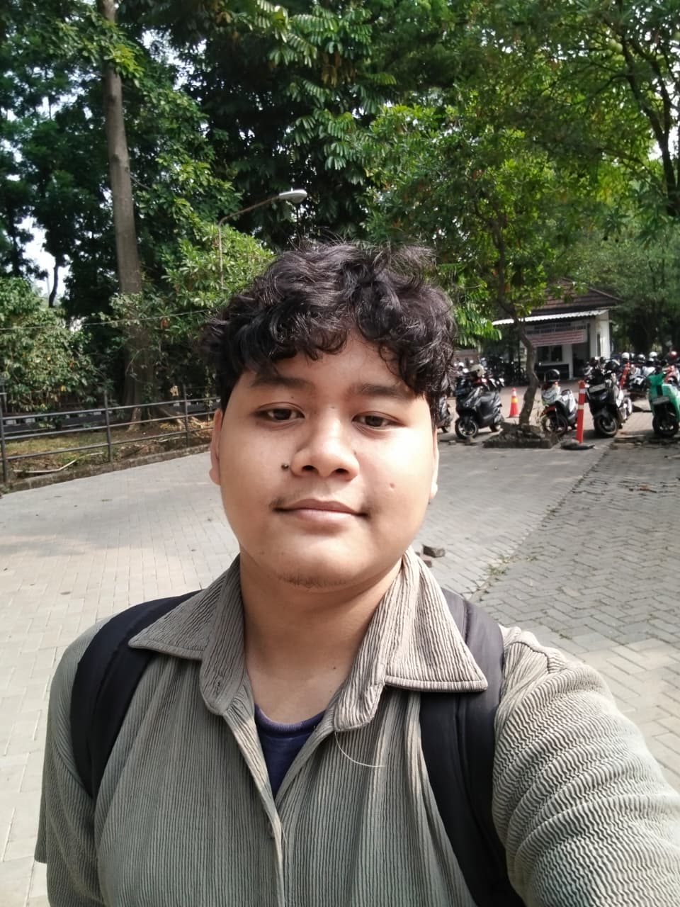

IPB University | SSMI | Kecerdasan Buatan | Angkatan 62
Pengembangan perangkat lunak, pemrograman (seperti C dan Python), eksplorasi algoritma, serta aktif berpartisipasi dalam organisasi mahasiswa.
Ingin mendalami ilmu Kecerdasan Buatan untuk memecahkan masalah nyata, membangun solusi teknologi yang inovatif, dan berkontribusi aktif dalam komunitas akademik di IPB.